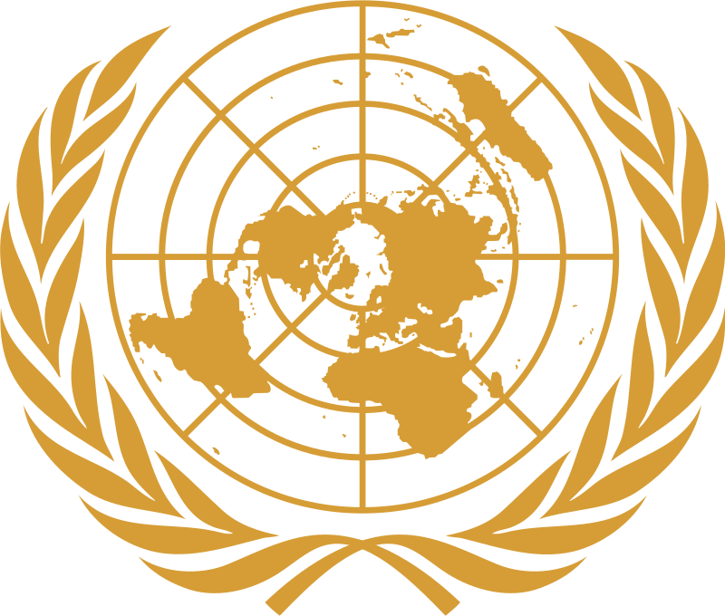
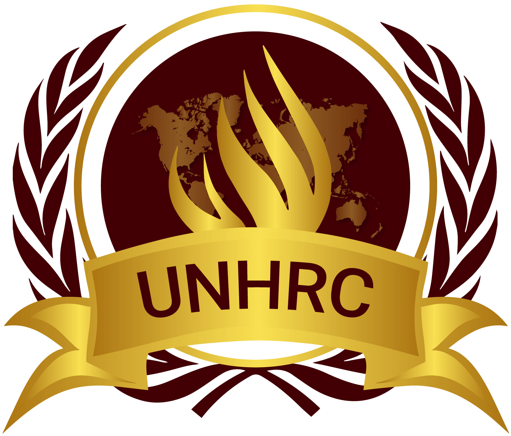
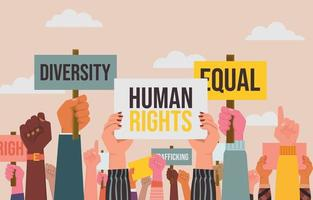
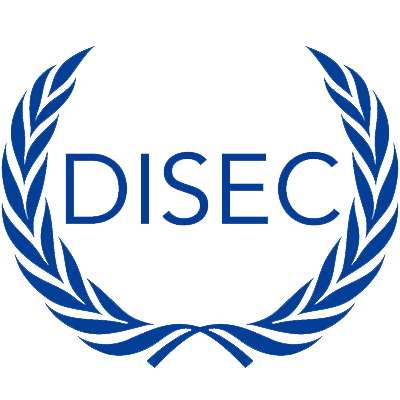
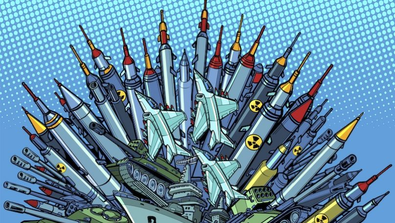
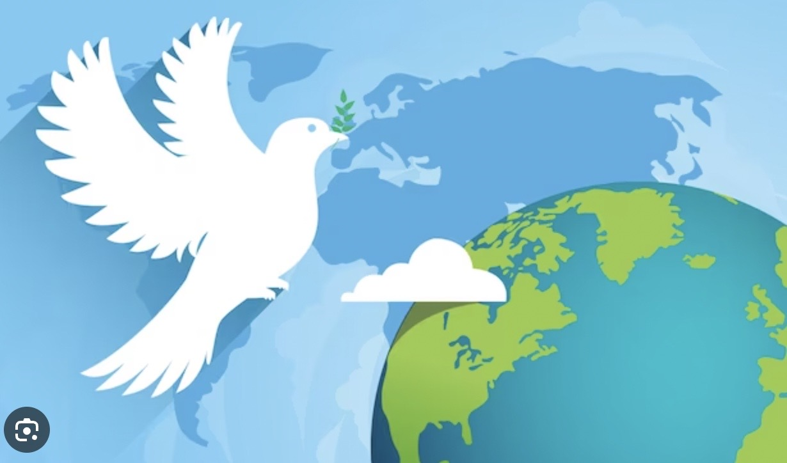

ECOSOC:
ECOSOC is one of the principal organs of the United Nations and is responsible for promoting international economic and social cooperation and development. It discusses various economic, social, and environmental issues and formulates policies to address global challenges.

UNHRC:
The UNHRC is a subsidiary body of the UN General Assembly and is tasked with addressing human rights violations and promoting and protecting human rights around the world. It conducts periodic reviews of the human rights records of UN member states.


DISEC:
DISEC is one of the six main committees of the United Nations General Assembly. Its focus is on matters related to disarmament, global security, and the regulation of conventional weapons.

UNSC:
The UNSC is one of the primary organs of the United Nations and has the responsibility for maintaining international peace and security. It is composed of five permanent members (China, France, Russia, the United Kingdom, and the United States) and ten non-permanent members elected by the General Assembly for two-year terms.
